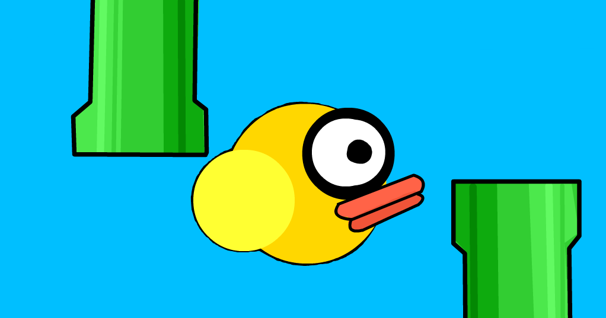

 Flappybird is a fun game that became a global powerhouse in just a few weeks. The game was created by Dong Nguyen, who is from Vietnam. Dong made many iOS games before launching flappybird. Within a week of launching on google play, it became the most downloaded app!
It's really easy to play. All you need to do is tap the screen when you think you're going to hit a pipe. If you hit a pipe, the game is over and you have to start all over from the beginning. It seems simple, but it gets hard!